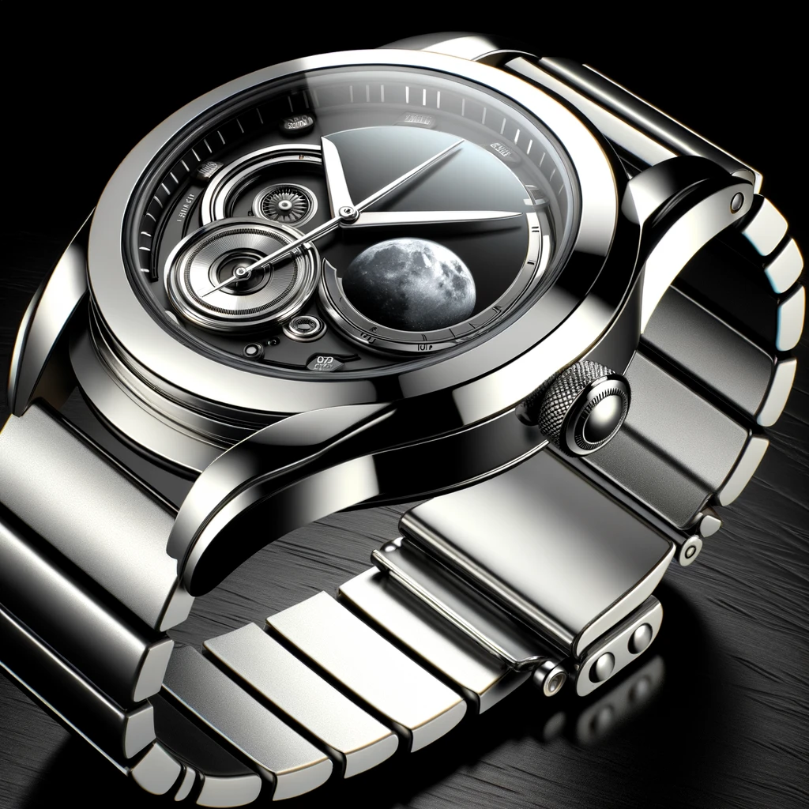
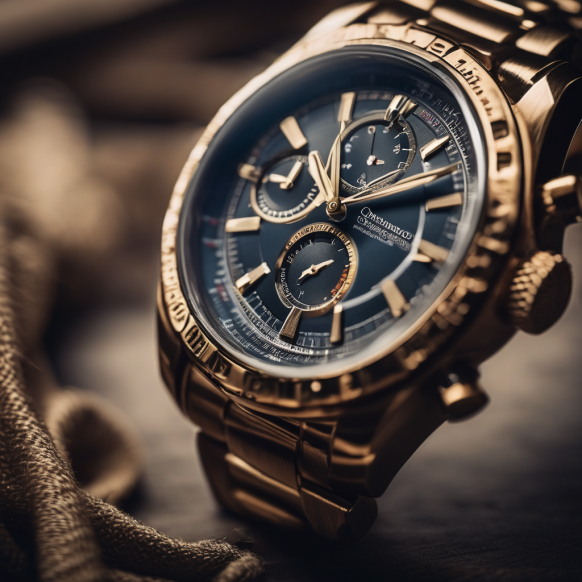
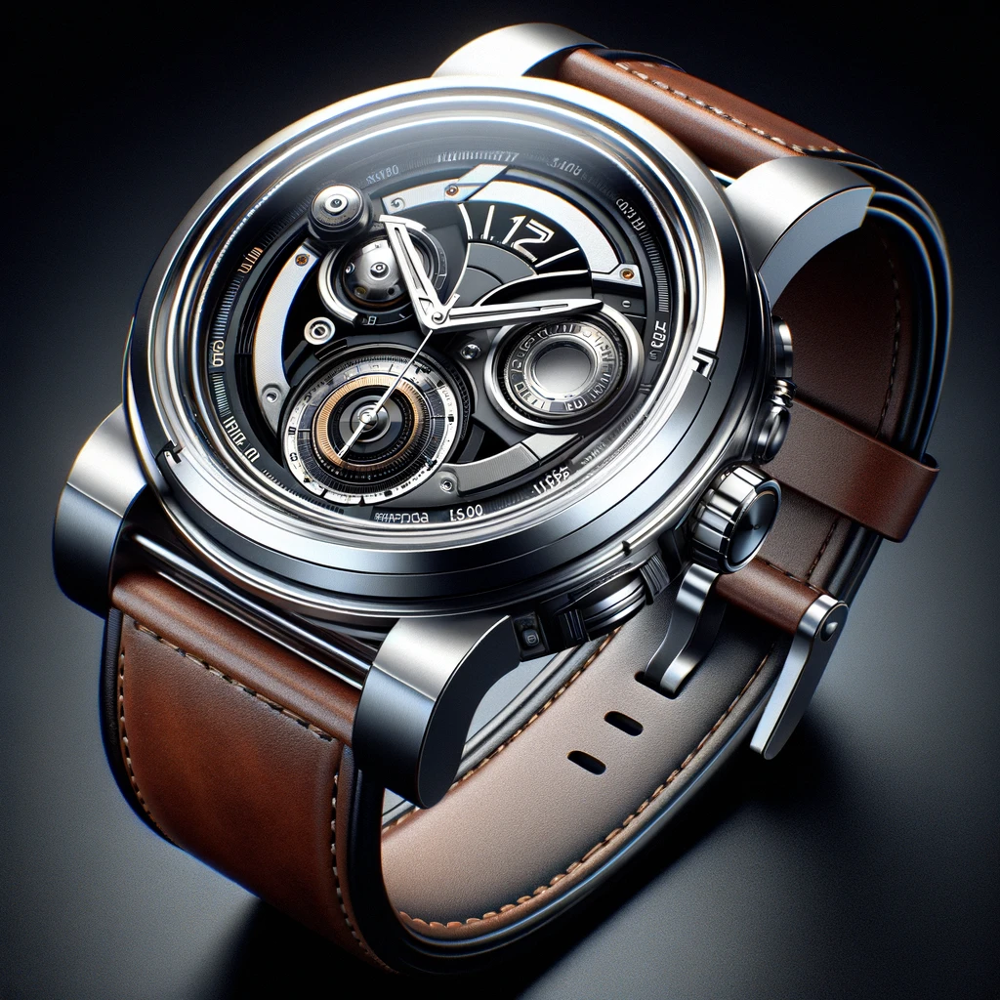

Il y a cinq ans, cinq amis passionnés d'horlogerie et d'exploration spatiale ont décidé de créer leur propre entreprise pour donner vie à leur vision commune : des montres futuristes inspirées par l'espace, intégrant même des éléments provenant de la surface de Mars et de la Lune. Ainsi naquit "Octime". Les fondateurs, Léo, Mathis, Simon, Adèle, et Sasha, possédaient tous des compétences complémentaires allant de l'ingénierie à la conception artistique. Leur ambition était de repousser les limites de la créativité horlogère en combinant l'esthétique avant-gardiste avec des matériaux extra-terrestres authentiques.

Dès le début, l'équipe d'Octime s'est lancée dans des partenariats innovants avec des agences spatiales et des organisations scientifiques. Ils ont réussi à obtenir des fragments de roches lunaires et martiennes, qu'ils ont ensuite intégrés dans la conception de leurs montres. Chaque pièce était ainsi imprégnée symboliquement d'une part de l'univers.
La première collection, appelée "Cosmic Elegance", fut dévoilée lors d'un événement inédit où des astronautes renommés étaient présents pour célébrer cette collaboration unique. Les montres étaient des œuvres d'art miniatures, mêlant des lignes futuristes et des matériaux spatiaux d'une élégance inégalée. Au fil des années, Octime a continué à innover, lançant de nouvelles collections inspirées par différentes planètes et phénomènes spatiaux. Chaque modèle était limité en quantité, ce qui ajoutait une touche d'exclusivité et de rareté. Les montres de l'entreprise sont devenues des symboles de prestige, convoitées par les collectionneurs du monde entier. Malgré leur succès croissant, les fondateurs ont toujours maintenu une approche collaborative et créative. Ils ont ouvert un atelier de recherche et de développement où des horlogers talentueux, des ingénieurs et des artistes pouvaient collaborer pour donner naissance à de nouvelles idées et concepts révolutionnaires.
Octime a également joué un rôle actif dans l'éducation, en organisant des expositions et des événements pour sensibiliser le public à l'exploration spatiale et à l'importance de préserver les ressources extraterrestres. Aujourd'hui encore, cinq ans après sa création, Octime continue de repousser les frontières de l'innovation horlogère et de faire rêver les amateurs de montres du monde entier. L'entreprise demeure fidèle à sa vision initiale, combinant la science, l'art et la passion pour l'exploration spatiale dans chaque montre qu'elle crée.
